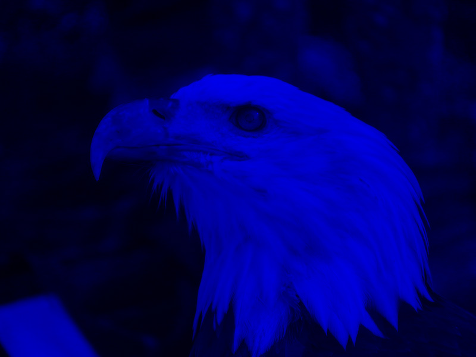
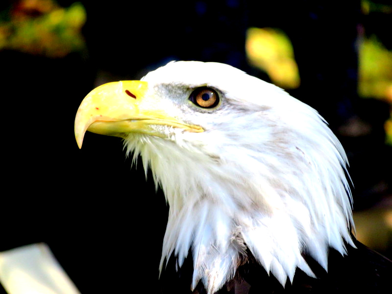
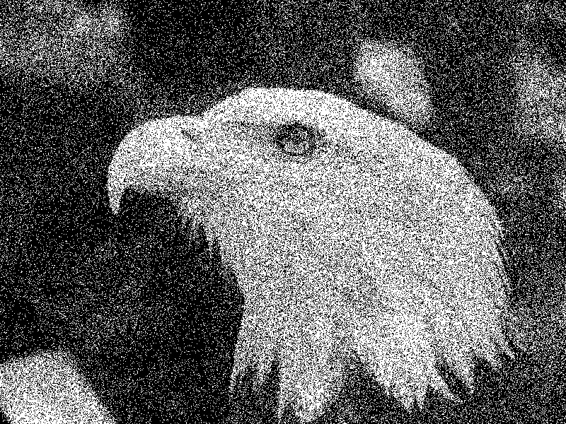
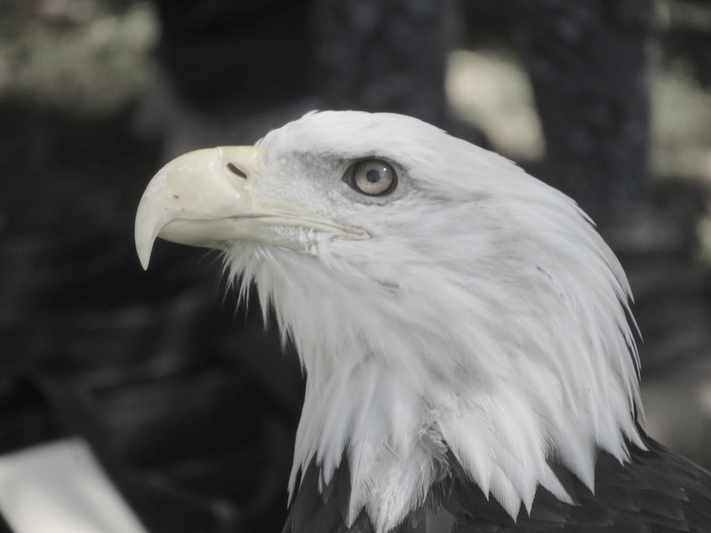
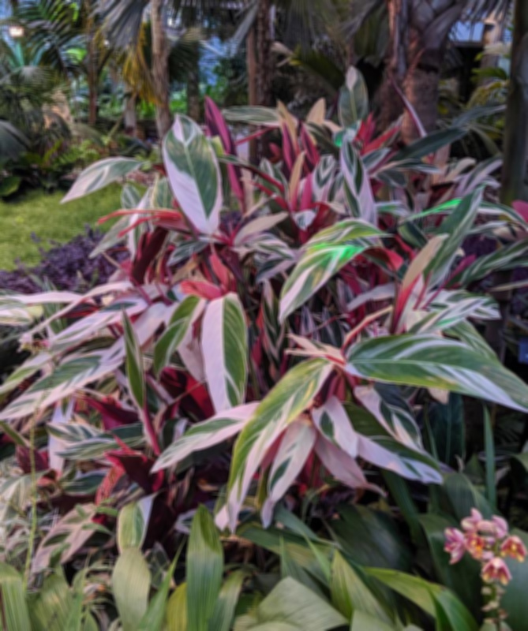
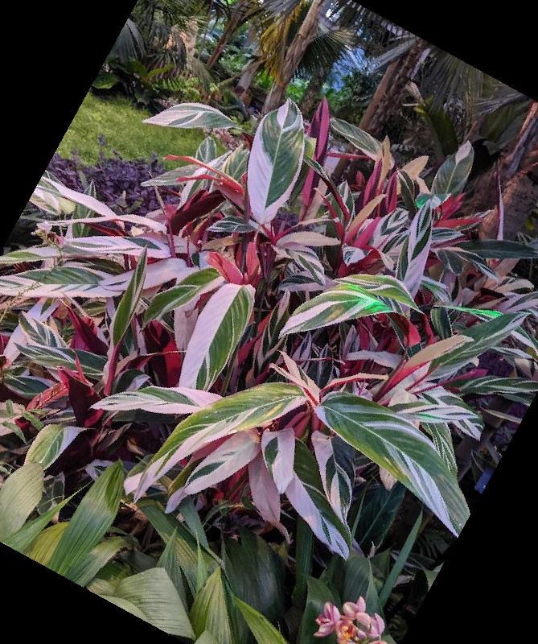
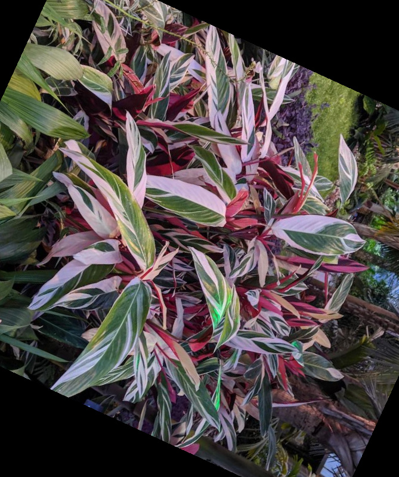
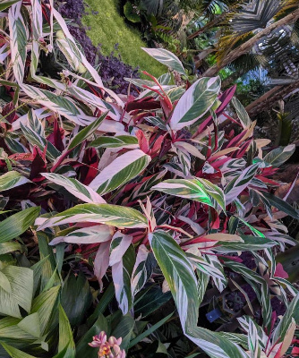

Once again, I went on a rabbit hole of learning other things when doing this project, including (kind of) learning html, what git is and how to use it, all in order to be able to edit my website from a local html file on my computer in VScode and update my github repository which hosts(not sure if that is the right word) the github pages to display the html file in this website you, friendly reader, are viewing.
Now when it comes to the actual graphics portion of the assignment, don't worry I still spent much time hassling over the tiny details of this image class. What caused me the most issues at first was that I was using starter code Stephen provided for us, which had many lovely aspects to it. However one of the things that I did not realize about the pixel class is that every bitwise operation clamps - almost too much. Much of the code that I wrote in the image class avoids using any of the functions from the pixel class, up until a point where I got sick of repeating the same steps over again and just changed the component-wise functions for the pixel class. I actually still have not figured out the random noise, because I think I struggled with implementing random events in cpp. The link below should take you to a zip file of my project. To compile the project locally on windows, navigate to the project folder on terminal and run "g++ main.cpp pixel.cpp image.cpp -o image" Project Zip The images below were from performing the following different effects: extracting blue channel, contrast, random dither, saturation, blur, rotation with nearest neighbor sampling and then bilinear, and scale with bilinear sampling, then edge detection. Messing up edge detection created the last "artistic image"        